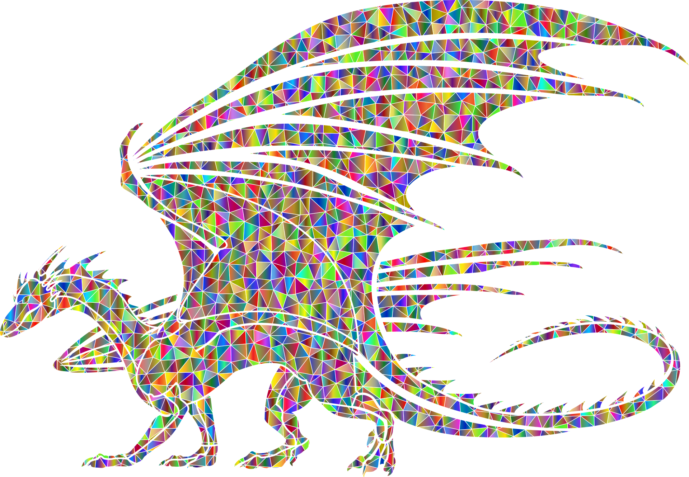

Dragons in Modern Times
How are dragons used and perceived today?
In modern times, dragons are not considered to be real creatures. However, Western depictions of dragons have turned more favorable in present day. Dragons are popular Halloween costumes, decorations, and toys. Dragon are protagonists of stories and are forces of good. Although interpretations of dragons as evil creatures still exist, it is not the sole interpretation of them. In Asian cultures, dragons are still popular and remain prevalent in folklore and mythology. Overall, dragons are used to create fantastical stories and allow people to use their imaginations to envision these majestic creatures. They are also used to create artwork and decorations that bring enjoyment to people. Dragons, much like other mythical creatures, are a way for people to engage with the fantastical.
Dragons in Modern Media
How are dragons portrayed in modern media?
Dragons are now a common sight in modern media. Sometimes they appear as background creatures, sometimes they are companions to characters, and sometimes the dragons themselves are the focus of the story. One well-known depiction of dragons in modern media is the "How To Train Your Dragon" series, which includes both films and a television series. In "How To Train Your Dragon" the protagonist, named Hiccup, discovers that the dragons his clan fights are actually not the evil creatures they thought they were. This is a perfect example of how Western ideas of dragons have changed to become more favorable over time. Dragons are also very popular in the fantasy tabletop role-playing game Dungeons & Dragons, in which dragons can be evil, good, or both depending on how the game is set up. Asian depictions of dragons have also become more popular in general media, with the movie "Spirited Away", produced by Studio Ghibli, a Japanese animation studio, being popular globally.
